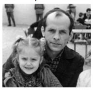
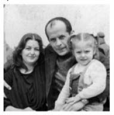
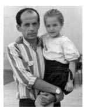
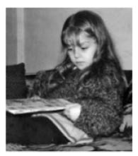

“Aydın’la Kızımı Yan Yana Görünce Umut Yeşerdi İçimde.”
Filiz Akyazı44
Eşim Aydın Akyazı, 12 Eylül döneminde Fatsa Devrimci Yol Davası’nda 146/3. maddeden yargılandı. 15 yıl ceza aldı örgüt üyeliğinden. Dava 25 yıl devam etti 1975’te açılan dava 1980’de açılan Fatsa Dev-Yol davası ile birleşerek 12 Mayıs 2002’de sonuçlandı, zaman aşımından düştü. 9 yıla yakın Efirli Cezaevi, Amasya Askeri Cezaevi, Amasya Kapalı Cezaevi ve Erzincan Sıkıyönetim Cezaevi’nde yattı.
Darbeden Önceki Hayat
Evlendiğim zaman Fatsa’daydım. Aydın öğretmendi. Zaten çok kısa bir dönem birlikte olabildik. Biz nisanda evlendik. Temmuzda Nokta Operasyonu olduğu için Fatsa’yı terk edip köylere çekildik. Yaşamımıza köyde devam ediyorduk. Çünkü Fatsa’da kalabilme imkânına sahip değildi devrimciler o dönem.
Fatsa’da da tam bir düzen kurmuş değildik. Ben de aynı mücadele içinde yer almış bir insandım. O sürece katılan, o tür çalışmaların içinde olan yani geleneksel olarak evlenip ev kadını olan bir insan değildim. Aydın, çalışmak için kendi işine giderdi, ben kendi bölgelerime kadınlarla çalışmaya giderdim. Her birim ayrıydı. Fikri ağabey, Belediye Başkanı’ydı. Onun çalışma alanı ayrıydı. Aydın okullar sorumlusuydu o dönemde. Ben de kadınlarla çalışıyordum, Fatsa’nın daha başka bir bölgesindeydim. Mahalle örgütlenmelerinde çalışıyordum.
Nokta Operasyonu olduğunda 12 Eylül sonrası öldürülen bir arkadaşımızın ailesinin evindeydim. Oradan kaçmak durumundaydık çünkü ilk etapta basılacak evlerden bir tanesiydi. Onun için ben, mücadelenin içinde geri çekilme yaşadım. Beklediğimiz, olacağını bildiğimiz şeylerdi. Neler yapmamız gerektiğini de biliyorduk aşağı yukarı.
Darbe Geliyor, Aydın Alınıyor
Eşimin köyü olan Kayaköy’deydim. Nokta Operasyonu sırasında herkes Fatsa’yı terk edip kendi köyüne, kendi bölgesine çekilmiş, orada mücadeleye devam etmişlerdi. Kayaköy oradaki köyler içinde içeriye en fazla adam veren, insanların gözaltına en çok alındığı, cezaevlerinde yattığı, işkence gördüğü köylerden bir tanesi. Aktif olarak köylerdeki çalışmalara katılmadım. Bir de hamilelik sürecim vardı ama arkadaşlar sürekli gelip gidiyordu. Örgütlenme Fatsa’nın köylerinde devam ediyordu aynı şekilde. Sıkıntı ne zaman başladı, her köye, her ilçeye, her nahiyeye karakollar kurulduğunda başladı. Çatışmalar baş gösterdi, gözaltılar, kaçışlar başladı.
12 Eylül’ü biz köyde yaşadık. Bir sabah arkadaşlar geldi, darbe olduğunu söylediler. Bizi, şehirleri etkilediği kadar etkilemedi köyde. Çünkü biz operasyon sırasında köye çekildiğimiz için orada belli bir düzen zaten kurmuştuk. 12 Eylül bize 12 Eylül’de gelmedi. Darbe bize 11 Temmuz’da gelmişti.
Benim artık köyde kalacak durumum kalmamıştı. Sürekli eve baskın yapılıyordu. İlk gelişlerinde benim, Aydın Akyazı’nın eşi olduğumu anlayamadılar, herhalde görüntüden kurtardım: zayıf, ufak tefek, uzun etekli, başı bağlı bir kız çocuğu gibi gördüler ama daha sonraki gelişlerinde tabii eşi olduğumun bilinciyle geldiler. Aydın o ara bana haber iletti hemen köyü terk et diye. Ben de hemen ailemin yanına, Ordu’ya gittim. Çok bir sıkıntı olmadı. Aydın’ın devrimci ve Fatsalı olduğunu herkes biliyordu. Ben gittiğim zaman arandığını, doğal olarak biliyordum. Yani kimseye bir dert anlatmam ya da kimseden bir şey saklamam gerekmedi. Ama artık Aydın’ın kalacağı yer kısıtlı olmaya başladı. Eee kış geliyor. Sadece o bölgedeki insanlarla birlikteler ve herkes yakalanmaya başladı. Dışarıda çok az insan kaldı. İletişim kopukluğu oldu aralarında. En son, akrabaları Aydın’ı Ordu’ya getirdiler. Biz bazı arkadaşların ve akrabaların evinde kısa aralıklarla kaldık. Tesadüfen o gün annemlerin evine gittik. Çok ilginçtir, karakolun önünden geçerken bir cemse, içinde askerler koşuşturuyorlar. Bir eve baskına gidiyorlar diye de espri yaptım. Annemlere gittik, daha paltolarımızı çıkarmamıştık, kapı çalındı. Meğer arkamızdan eve gelip evi sarmışlar. Aydın’ı alıp götürdüler. 12 Eylül’den sonra 25 Kasım’da Aydın, Ordu’da yakalandı, gözaltına alındı. Esas macera da ondan sonra başladı.
Sorgu için Fatsa Et Balık’a götürdüler. Genelde orada yakaladıklarını Perşembe Eğitim’e götürüyorlardı, bir sorgu yeri de orasıydı. Ama Aydın, Perşembe Eğitim’de okuduğu için her tarafını çok iyi biliyor, kaçar diye korktuklarından onu direkt Ordu Cezaevi’ne götürdüler. Sorgusu boyunca da orada kaldı. Ben hamileydim, kalbimde de bir problem çıkmıştı. Dolayısıyla hem bebeğin hem de benim kontrol altında olmamız gerekiyordu. Aydın’dan haber alıyordum. Zaten görüşmemiz mümkün değil, görüştürmüyorlardı. Benim annem biraz girişken, gözü pek bir kadındır. Bizde bir de minnet etmeme, kuyruk dikliği vardır. Ben asla kimseye gidip eşimle görüşeyim diye bir teklifte bulunmazdım. Çünkü benim tüm arkadaşlarım, tutuklu olan arkadaşlarımın eşleri dışarıda, not yazıyorlar ya da giysi getiriyorlar, tel örgülerin dışında askere veriyorlar, onlar da içeri iletiyorlar. İşte gelebilirse oradan geri not geliyor. Annem gidip oradaki binbaşı ile görüşmüş. Biraz sonra geldi, ben konuştum kızım seni görüştürecekler dedi. Adama demiş ki, “Benim kızım kalp hastası, hamile, Ankara’ya gidecek, ne olacağı da belli değil kızımın. Riskli bir durumu var. Eşi ile görüştürmeniz mümkün mü?” Adam bir iki sıkılmış filan, işte olur olmaz derken aldı beni Aydın’la görüştürmeye götürdü. Yani çok tesadüfi bir şey. Aydın sürekli sorguya getirilip götürülüyor. Yemek yedikleri bir salon varmış, oraya oturduk. Binbaşı ve ben sohbet ediyoruz. Ben sorgudan bahsediyorum. Binbaşı diyor ki: biz yakalayıp getiriyoruz ama biz sorguya giremiyoruz. MİT giriyor, 2. Şube giriyor diye anlatıyor. Eminim ki adamın, Aydın’ın durumundan haberi yoktu. Çünkü getirin diye askeri yolladı, biraz sonra iki askerin kolunda sürüklenerek eller kollar şiş, tüm vücut mosmor gelince adam benden önce fırladı yerinden. Buna ne yapmışlar böyle diye. Adamın Aydın’dan haberi olsa beni Aydın’la asla görüştürmezdi. Getirmiş bulundu. Benim onu gördüğümü gördü. Bir de duygusallaştı herhalde; hamile biri karşısında, kalp hastası diye anlatılınca. Aydın gelince de adam bir şey yapamadı. Dışarı çıktı, Aydın’la da bizi yalnız bıraktı ve bize çay yolladı. Çok kısa bir dönemdi. Aydın’ın dediği şuydu bana... çok şeyler yapıldığını biliyorum. Aydın’ın ya da işkence gören hiçbir arkadaşım direkt olarak bana şöyle şöyle yapıldı diye anlattığını duymadım. Ama bir araya geldikleri zaman, bir anılarından bahsederken ne yapıldığını öğreniyorsunuz. Mesela ben o dönem Aydın’ı, ayaklarından bağlanıp defalarca denize sarkıtıldığını, hem de bir aralık ayında, son nefesine kadar suyun içinde bırakılıp sonra çekildiğini falan öğrendim tesadüfen. Ya da bir köpekle sabaha kadar bir küçük kulübenin içinde baygın bir şekilde yattığını biliyorum. Bunlar, arkadaşları ile espri yaparken öğrendiğim şeyler. Ben Aydın’ı en son o zaman gördüm. Yapacak bir şey yoktu yani.
Aslında nasıl bulacağını zaten biliyorsun. Ağlanma sızlanma zamanı da değil. Karşındaki insana destek olma zamanı. Senin şikâyet etmen, ağlaman ya da yakınman o insanı güçsüz yapar. Biz cezaevi sürecinde hep dik durduk. Normalde süslü giyinmiyorsak da, arkadaşlarımızdan giyerdik, biz AGS derdik –Arkadaş Giyim Sanayi– hiçbir zaman şık ya da o kadar kıyafetimiz olmazdı. Çünkü maddi imkânsızlıklar vardı. Sürekli içeridekiler için bir şeyler yapıyorsun. Aldığın zaten asgari ücret, çocuğun var, ev kiran var vs kendini ancak idare edebiliyorsun. Giyime ayıracağın çok paran zaten yok. Ama her görüşe giderken mutlaka güzel giyinirdik. Onların morali düzelsin, onlar içeride dik dursun diye. Hiç şikâyetim olmadı. Biz aslında ne yaptığımızın farkında da değildik. Biz, yapılması gereken şeyi yaptığımızı düşündük ve hâlâ da aynı şeyi düşünüyorum ben. Biz, o gün nasıl davranmamız gerekiyorsa öyle davrandık. Şikâyet etmedik, yakınmadık, ağlamadık. Hep dik durduk.
Et Balık’tan çıktığı zaman Ordu Efirli Cezaevi’ne götürüldü. Mahkemeye filan çıkmadı daha. Ben Ankara’da Hacettepe’deyim doğum için. O da ayrı bir dert tabii. Adamcağız hücrede, karısı kalp hastalığı teşhisi ile Ankara’da hastanede yatıyor. Bir de 15’inde doğum beklenirken Çiğdem 28’ine kadar doğmamakta direndi. Benden bir haber alamıyor. Hücrede tek başına bütün gün beni mi düşünsün, bebeğini mi düşünsün ya da kendi konumunu mu düşünsün. Her şeyi düşünüyor daha doğrusu. Onun durumu daha da zor. Çok acayiptir: cezaevinden, hücreden alıyorlar, Amasya 2 No’lu Askeri Cezaevi’ne götürülüyor. Ancak ondan sonra benden haber alabiliyor ama o haberlerin de çok iyi olduğu söylenemez. Kimisi; Filiz doğum yaptı çocuğu ölmüş diyor, kimisi Filiz’in durumu iyi değilmiş diyor. Niye böyle şeyler söyleniyor bilmiyoruz. En sonunda işte benim doğum yaptığımı, Çiğdem’in iyi olduğunu, hastanede olduğumuzu öğreniyor. Ben ertesi gün hastaneden taburcu olacağım. Hastanede yatarken oradakilere eşimin öğretmen olduğunu, Doğu’da çalıştığını, şubat tatiline ancak gelebileceğini, yolların kapalı olduğunu söylemiştim. Aydın bana telgraf çekmiş. Hemşire, gece 1 ya da 2 gibiydi, telgrafı getirdi. Kızcağızın gözlerinde müthiş bir acı, merak ve üzüntü gördüm. Hiçbir şey diyemedi. Sadece bana telgrafı uzattı ve gitti. Çünkü telgrafın üzerinde kocaman bir “görülmüştür” damgası vardı.
Ben yıllar sonra öğrendim ki: orada yatarken yalnız değilmişim, devrimci arkadaşlarım orada bile beni kollayıp durumumdan haberdar olmuş ve ilgilenmişler. O da çok hoşuma gitti. Yalnız olduğunu düşünüyorsun, tek başına bir hastanedesin. Sadece ailen geliyor ama yine sahiplisin, sahip çıkıldığını görüyorsun. İşte, kan lazım olabilir dedi bir sürü insan, o kapıya geldi o dönemde. Sıkıyönetimin en sıkı olduğu dönemde. Bunlar güzel şeylerdi.
Doğumdan sonra Ordu’ya dönmedim. Ablam zaten Ankara’da yüksek öğrenim yapıyordu. Eniştem de Giresun Dev-Yol Davası’ndan içerideydi. O, cezaevine 12 Eylül’den önce girmişti. Ben ablamın yanına geldim doğum için. Onun yanında kalıyordum. Çiğdem 1.5 aylık olana kadar ablamın yanında kaldım. Sonra kayınpederim geldi. Biz onunla birlikte, Amasya Cezaevi’ne Aydın’ın görüşüne gittik.
Çiğdem’le Görüşe Gidiyoruz
İlginçtir, herhalde duygularımızı çok bastırmışız, birçok şeyi zor hatırlıyoruz. Anlatamıyorsun ya da ifade edemiyorsun. Kucağınızda bir bebek. Kayıt oluyorsun, aranıyorsun. Bir yığın askerin arasından gidiyorsun. Bir de olaya hiç “ben” diye bakamıyorsun. Görüşe girdiğin zaman bir sürü insanla birlikte giriyorsun. Karşında tel örgü. Tel örgünün arkasında tüm yakın arkadaşların, sevdiğin insanlar. Sadece Aydın’la çok kısa görüşme alabildik. Onda da kızını kucağına alabilmesi için. Bize 5 dakikalık görüş verdiler, açık görüş gibi. Şimdi düşünüyorum, insaflı da davranmışlar. Demek ki o tür yönleri de olabiliyormuş zaman zaman ya da ben o tür yönlerine denk gelmişim herhalde. Çok mutlu olmuştum. Mesela, Çiğdem’i ilk kucağıma aldığım zaman çok korkmuştum. Yani bir anne çocuğunu kucağına aldığında ilk duyduğu şey korku olmamalı ama benimki korku olmuştu. Çünkü neyle karşılaşacağını bilmiyorsun. Bir de ilk defa anne oluyorsun. Eşin içeride. İş yok, güç yok, gelecek yok, dost yok, arkadaş yok. Hepsi bir tarafa kime ne olacağını bilmiyorsun. Benim duyduğum korkuydu ve Çiğdem’e Nâzım’ın şiirini okudum, Hoş geldin Bebek diye... İlk aklıma gelen, kucağıma alınca oydu ama Aydın’la ikisini yan yana görünce umut yeşerdi içimde. Bilmiyorum. Umut oluştu. Onların ikisini yan yana görmek bana umut verdi.
Ufak bir ev kiralamıştım. Ben doğum için gidince kayınpederim eşyalarımı köye çıkardı. Bir nevi göçebe hayatı yaşadım işe girene kadar. 1983’te işe girdim. Çiğdem 2 yaşındaydı. Bir çanta, bir valiz ve Çiğdem’le atlayıp Ordu’ya gidiyorum, ailemin yanında kalıyorum. Oradan Fatsa’ya geliyorum. Aydın’ın 15 günde

Çiğdem babası Aydın Akyazı’yla
birlikte
bir düzenli görüşüne gidiyorum. Köye çıkıyorum, kayınpederimde kalıyorum bir müddet. Oradan çıkıyorum, ablam Reşadiye’ye tayin olmuştu, Tokat’ın bir kazasına. Orada öğretmenllik yapıyordu iki çocuğuyla birlikte. Çıkıp ablamın yanına gidiyorum. Yani benim hayatım o iki yıl boyunca; işe girene ve Çiğdem iki yaşına gelene kadar göçebe olarak geçti.
Çiğdem’le DAL’a Gidiyoruz
Aydın’ın mahkeme süreci devam ediyordu. İki sefer gözaltına alındım. İlginçtir, iki seferde de cezaevi görüşünden dönerken gözaltına alındım. Bir tanesinde yoldan aldılar, bir tanesinde de evden aldılar. Biz cezaevi görüşlerine minibüs tutarak gidiyorduk Amasya’ya. Çünkü çok kalabalıktık. Geri dönerken, arabada da çoğunlukla kadınlar olurdu. Her görüşe gittiğimde arkadaşlar bana hep şu soruyu sordular: “Aaa Filiz, sen burada mısın, biz seni gözaltına alındı diye duyduk”. Ben geri dönerken gözaltına alındım. İkisinde de Çiğdem yanımdaydı, beraber gittik. İlk seferinde aldılar Ankara’ya geldik. Bizim bir arkadaşımız vardı o dönemde, Şafak, arayıp yakalayamadıklarındandı kendisi. Ben doğum için geldiğimde bir sabah kapı çaldı, Şafak kapıda. Ankara’ya gelmiş. İşte Ordu’ya gitmiş, Aydın, bizim ve babamın adresini vermiş. Onlar bir aradaydılar, ayrılmadan önce en son döneme kadar. Şafak babamdan ablamın adresini alıyor Ankara’ya iniyor. Ankara’da geldi sabah, onu da bir kadın getiriyor, başka bir köyde evlerinde kaldığı bir kadının kızının kimliğiyle geliyor. Benim buradan başka gidecek bir yerim yok, dedi. Geri dönersem teslim olmam gerekecek dedi. O gün ben kontrole gideceğim, hastanede randevum var. Bizim bir arkadaş geliyor öğleden sonra. Şafak’ı orada görünce, Fatsa’dan bir arkadaş, sen burada ne yapıyorsun diye Şafak’ı alıp götürüyor. Annemden aldım gözaltına alınacağım haberini. Ben hazırlıklarımı yaptım. Çiğdem’in bezlerini yıkadım. Her şeyini hazırladım. Hemen ablamı aradım. Evi terk edin dedim. Ağabeyimle birlikte kalıyordu. Herhangi bir şey olursa siz tanımıyorsunuz, Şafak benim arkadaşım, geldi siz işe gittiniz, okula gittiniz. Geldiğinizde yoktu, daha da görmediniz. Başka hiçbir şey söylemiyorsunuz. Zaten onlar evi terk ettiler. Biz gittik baskın yaptık, evde kimseyi bulamadık. O gece Emniyet’te kaldık. Çok çok kötüydü. Yani ben Emniyet’i orada gördüm. İşkenceden çıkan insanları, gözleri pankart bezleriyle bağlı... Ayakta bile duramayacak insanları... Oturamayacak insanları nasıl ayakta tuttuklarını, dövdüklerini... Kötüydü yani Ankara. 1 gece kaldım ama... Aşağıdan işkence sesleri geliyordu gece boyunca. İşkenceden çıkan, sorgudan çıkan insanları oraya getiriyorlar. Bir müddet orada tutuyorlar. Oradan cezaevlerine Mamak’a filan yolluyorlar. Hatta benim bir arkadaşım –Dil Tarih’te okuyordu, Mamak Cezaevi’ndeydi– işte gelenlere kimi gördün Emniyet’te kim var diye soruyorlarmış. Kızcağız da Fatsa’dan birini getirdiler, kucağında bebeğiyle, Çiğdem filan diyor. Çok korktum diyor, seni de getirecekler diye.
DAL’daki sorgunun peşine yukarı çıkarıyorlar. Oradan cezaevlerine yolluyorlar. Sistemleri benim gördüğüm oydu. Ama şu benim dikkatimi çekmişti: kızlar erkenden uyumaya çalıştı. Bir tane bayan bana yardımcı oldu. Çiğdem’in bezleri var çünkü. Hazır bez yok. Hazır bez olsa da paran yok. Bir de bezi yıkamak zorundasın. Ben yangın kovalarında bezleri yıkadım. Bir kızcağız geldi benimle, dedim ki neden herkes erkenden yattı? Çünkü kimi alıp sorguya götürdüklerini görmek istemiyorlarmış. Bir de o sesleri duyana kadar biraz uyumak, mümkünse olanı kaçırmak istiyorlar. Yaşamak istemiyorlar hadiseyi. Gece birisini alıp götürdüler oradan. Ama şu vardı, biz Çiğdem’le kapıdan girdik, küçük bir koridor var, büyük bir salona açılıyor. İnce bir koridor var, iki odaya bakıyor ve büyük bir yere giriliyor. İlk girdiğim büyük yerde gözlerinde pankart bağlı insanlar. Sorgudan gelmişler. Kimisinin arkasında ya da önünde etiket var: su ve ekmek verilmeyecek, ayakta duracak kesinlikle yazıyor. Biz Çiğdem’le girdik. Karşı odadakilerin gözleri de açıktı, kapı aralıktı. Bir çocuk, acayip bir şey, bir bebek... hayat geldi insanlara. Ve insanlar moral buldular orada bir bebeği görünce. 6 aylıktı. Kucakta bir bebek. İnsanlarda çok değişik duygular uyandırdı. Bir noktada umut mu oldu, hayatın devam ettiğini mi gördüler bilemiyorum. Arkadaşımın söylediği şuydu: “Bebeğin gelmesi, orada bir bebeğin ağlaması ya da bir bebeğin nefes alması bize bir nefes oldu. Dışarıda hayatın devam ettiğini gördük...” O güzel bir şey bence. Farkında olmadan birilerine umut olmak... Güzel bir şey.
Evde kimseyi bulamayınca benden de bir şey alamayınca geri geldik. Tabii Fatsa’ya geldik. O gece Fatsa nezarette kaldık. Bir iki tehdit mehdit, döveriz bilmem ne yaparız... Ben de döversiniz, yapmadığınız şey değil, dedim. Biraz diklendik. Meğer babam da dışarıda bekliyormuş. Komiser “Seni şimdi çıkaracağız ama Aydın zor gelir” dedi. Ne zaman geldiği önemli değil, gelsin de dedim ben. Beni çıkardılar. Ben babamla Ordu’ya gittim.
Bir diğer gözaltı olayım da şöyle oldu: Giresun’da, bizim 7 arkadaşımızı dağda katlettiler, onları ihbar eden de bir muhtar. Çocukların bir şey yaptığı da yok, sadece dağa çekilmişler 12 Eylül sonrası. Hepsi taranıyor delik deşik. Muhbirlik yapıyor, muhtar vuruluyor. Bu, ihbarları sona erdirmek için bir gözdağı zaten. 12 Eylülcüler için de çok önemli. Çünkü ihbarların arkası duracak. Bir korku var. İnsanlar ihbar edemeyecek. Hani yakaladık demeleri gerekiyor. Aradıkları da, benim Ordu’da birlikte çalıştığım bir arkadaşım. Giresun bölgesinde Cemil olarak biliniyormuş. Ben Ordu bölgesinde Ali olarak biliyorum, Ali Hoca. Ablam, eniştemin görüşüne gitmişti. Beni aldılar götürdüler ama ben neden gittiğimi bilmiyorum. Yine de çok fazla bulaşmadan kurtuldum. Yani bu iki olay da benim uzun süreler cezaevinde tutulmamı gerektirecek şeylerdi ama ben onlardan yırttım.
İşçi Oluyorum
İşe girmem de ayrı bir macera. Tesadüfen İşçi Bulma Kurumu’nda, ablamın arkadaşı çalışıyormuş Tokat’ta. Haydi gel gidelim oraya, Kuruma kayıt ol dedi. Ablama gezmeye gidince kayıt olduk. Meğer orada sigara fabrikası açılacakmış. Herkes onu beklermiş. Kayıttan sonra beni sınava çağırdılar. Sınava gittim, kazanmışım. Geriye güvenlik soruşturması var. Ablamın Reşadiye adresini yer olarak gösterdim. Komşusu vardı: kendisi öğretmen, kocası komiser. Adama durumu anlattılar, güvenlik soruşturmam olduğunu ve mümkünse ilgilenmesini söylediler. Adam da tamam dedi. Eşi devrimciydi. Adamcağız o gün nöbetçiymiş. Gelen giden evrakları şöyle bir karıştırayım diyor. Bir bakıyor benim güvenlik soruşturmam adreste bulunamadı diye geri postalanacak. Tesadüf. Adam hemen tutuyor, güvenlik soruşturmasını “güvenli” yazıp yolluyor ve ben öyle giriyorum işe. Yoksa giremezdim.
İşe girdim, daha fabrika yeni açılıyor. Fabrikanın makineleri gelmiş ama bağlantıları olmamış, yerleşme olmamış. Malatya’ya yolladılar kurs için. 6 aylığına oraya gittik. Ve ben orada, 3 arkadaşım, 2 bayan, 1 erkek, 3 kişiye söyledim Aydın’ın içeride olduğunu. Gerisine eşim Almanya’da çalışıyor dedim. Çünkü Tokat o dönemde faşistlerin merkezi. Bırakın devrimciyi, sosyal demokrat CHP’lilerin bile evlerini bombalayarak kovmuşlar Tokat’tan. Sosyal demokratlar bile göç etmiş 12 Eylül öncesi. Ancak 12 Eylül’den sonra dönmeye başlamışlar, bir hareketlilik başlamış. Çünkü faşistlerin de sesi biraz daha kısılmış ama fabrikanın %95’i faşistti. Ben de şöyle düşündüm: yaşamak zorundayım, çalışmak zorundayım. Bu hiçbir zaman bir utançtan, pişmanlıktan herhangi bir şeyden kaynaklanmıyor. Ama en azından beni tanısınlar, ondan sonra öğrensinler ne öğreniyorlarsa diye düşündüm. İlişkilerim de gayet iyiydi. Beni severlerdi.
Hep Bayramlara Katılacağım
Çiğdem’i annemin yanına bırakmıştım. Çiğdem’i alıştırmaya başla “baban Almanya’da de” diye tembihlemiştim anneme. Çiğdem kim sorarsa herkese babam Almanya’da diyordu. Hatta bir ara dedim ki; “bana bile Almanya’da diye konuşuyor. Acaba Çiğdem cezaevini Almanya mı zannediyor?” Çiğdem 4 yaşlarında. Ablam bana geldi Tokat’a. Ben yarım gün çalışıyorum, ablam da evde. Çiğdem kendi kendine balkonun kenarında oyun oynuyormuş. Bir taraftan da babasıyla ve cezaeviyle ilgili bir şarkı uydurmuş onu söylüyor. Ablam hiçbir şey söylemiyor. Biraz sonra çağırıyor diyor ki: Kızım biraz önce güzel bir şarkı söylüyordun, bir daha söyler misin?.. Önce söylemek istemiyor. Ablam ısrar edince diyor ki: “Teyzecim aslında ben biliyorum, babam cezaevinde, Almanya’da değil. Ben hiç kimseye söylemem. Yoksa annemle bana zarar verirler.” Yani bizim çocuklarımız zamanından çok önce olgunlaştılar. Aslında bu yaşadıklarımız bizim tercihimizdi. Aydın devrimciydi, ben de devrimciydim. Benim tercihimdi yani o yaşam ama çocuklarımızın tercihi değildi.
Arkadaşımız Mehmet Gümüş, cezaevinden nisanın başında çıktı. 23 Nisan’da kardeşi Aslan’ın görüşüne geldi. Daha doğrusu arkadaşlarını görmeye geldi, içeride bıraktıklarını. Dışarıda da çocuklarla sohbet ediyor. Mehmet de çok duygusal bir insandır. Çiğdem’i tuttu dedi ki: “Çiğdem, baban çıkınca ne yapacaksın?” dedi. Çiğdem’in cevabı çok ilginçti: “Hep bayramlara katılacağım”. Çünkü biz resmi, dini bütün bayramlarda cezaevindeyiz. Yılba-

Filiz, Aydın ve Çiğdem Akyazı
cezaevi ziyaretinde
şında herkes evinde yılbaşı kutluyor, biz yollardayız karda kışta. Okula başlayınca bir şeylerin farkına varıyor çocuklar. Bayramlar önem kazanıyor ama çocuk, bayramlarda hep baba görüşünde. Tercih baba oluyor ama içinde de kalmış. Hep bayramlara katılacağım, dedi. Bizim Mehmet gözyaşları içerisinde arkasını dönüp yanımızdan öyle bir kaçtı ki, uzun bir süre de gelemedi yanımıza.
Çiğdem’de okul döneminde başladı baba kavramı. Belki onun bir nedeni de ablamın eşinin de içeride olmasıydı. Yani yeğenlerimin de babası yoktu. Ama okula gidince baba figürü ortaya çıktı. Okulda anne ve babanın birlikte olduğu aile modellerini görmeye başladı. Bir gün eve geldi, ağlamaya, başladı. Kızım niye ağlıyorsun diye sordum. Nedeni şu: herkesin defterini, kitabını, kalemini babası alırmış buna niçin babası almazmış? Olayı biliyor ama o duygularını da bir şekilde yaşaması gerekiyor. Ben de oturup ona bizim ailemizde çalışan insanın, para kazanan insanın ben olduğumu işte diğer arkadaşlarının ailelerinde para kazanan kişilerin babaları olduğunu, evde parayı ben kazandığım için, babası da yanımızda olmadığı için onun ihtiyaçlarını da benim karşıladığımı anlattım. Çiğdem’e mantıklı cevap vermediğiniz zaman kabul etmezdi söylediklerinizi.
Bir seferinde Avrupa İnsan Hakları Derneği’nden heyet gelmişti. Erzincan’a görüşe gittik. Gazeteciler de geldiler, resimlerini çektiler. Biz, Aydın ve arkadaşlarının durumunu AİHM’den gelen biri anlatsın, gazetelerde basılsın diye bekliyoruz. Ama ertesi gün Sabah gazetesini açtık ki, yarım sayfasını Çiğdem ile Aydın’ın resmi kaplıyor: “İdamlık babanın evlat hasreti...” Çiğdem çok güzel bir kızdı. Çok güzel bir çocuktu. Üzerinde kırmızı bir palto, sarı bir kaşkol. Sapsarı saçlar kırmızı kurdelelerle örülmüş. Babası ile birbirinin gözlerinin içine bakıyorlar gülerek. Çok da güzel bir resim yakalamış adam. Onu kullanmış. Hafta sonuydu, Reşadiye’den ablamlar gelmişlerdi. Yeğenim Çiğdem’e dedi ki: “Kız hadi meşhur oldun, gazetelerde çıktın. Nasıl hoşuna gitti mi?” “Hayır, hiç memnun olmadım” dedi. Birkaç gün sonraydı, Çiğdem yattı. Ben mutfağa geçiyorum. Bir hıçkırık sesi. Baktım yataktan geliyor. Çiğdem yorganın altına girmiş nasıl ağlıyor hıçkırarak. 7 yaşında o zaman. Ne oldu kızım diye sordum. “Benim babamı asacaklar mı?” diye ağlıyor. O ana kadar farkında değildi ama çocuklar çok acımasız oluyorlar. Resmi gördüklerinde arkadaşlarının evlerinde bunlar konuşulmuş. Çocuklar “Çiğdem, senin babanı asacaklar” diye gelmişler okula. Beni üzmemek için bana söylemiyor. Ben oturdum ona, öyle bir şey olmadığını, mahkemesinin devam ettiğini, aynı şekilde amcalarını anlattım. “Bak Sedat Amcan için de öyle diyorlar, enişten için de öyle diyorlar ama öyle bir şey yok” diye sakinleştirdim. Çocuklarımız çok travma yaşadılar. Ben hâlâ nasıl bu kadar sağlamlar, şaşırıyorum. Benim bu sürecim aslında Çiğdem’e normal bir hayat sunma çabasıyla geçti diyebilirim.
İşyerini Bana Dar Ediyorlar
Benim iş hayatım Aydın’ın içeride olduğunu bilmedikleri sürece çok problemli değildi ama işyerindekiler onu da öğrendiler. Hatta beni işten attırabilmek için çok uğraşmışlar. Ben sonra haberdar oldum bunlardan. Ben işe girdikten 4 yıl sonra oluyor bunlar. Aydın’ın içeride olduğunu nasıl öğrenmişler? İşe yeni birilerini almışlar. Çocuk beni görüyor diyor ki, o bayan kim? Elektrikçi diyorlar. Nereli? Ordulu. Evli mi? Evli, bir kızı var. Eşi nerede? Almanya’da. Diyor ki “Siz öyle zannedin. Eşi Amasya Kapalı Cezaevi’nde, komünist, Fatsalı komünistlerden, idamla yargılanıyor.” Meğer çocuk orada askermiş. Cezaevinin dışında da nöbet tutanlardanmış. Biz de dikkat çeken insanlarız. Çünkü sürekli bir itişme kakışma halindeyiz oradaki kapıdakilerle. O yüzden tanıyor. Bizim foya öyle meydana çıktı yani. Herkes aynı değil tabii ki, uğraşanlar da var, sahip çıkanlar da var. Mesela bizim şefimiz elektronik mühendisiydi. Kayseri’de okumuş. Adamın lakabı Timisi. MHP Ülkü Ocakları başkanlığı filan yapan bir adam. Kayseri ve Tokat’ta etkin bir faşist 1980 öncesi. Ama adam bana müthiş saygı duyardı. Ben giderdim, Aydın’ın mahkemesine gideceğim derdim, diretmez hemen iznimi verirdi. Mesaiye kalırdım mesela. Ücretimiz yetmezdi, mesaiye kalıp daha fazla para alırdık. İstese o bana çok şey çektirebilirdi. Sonuçta ben onun altında çalışan bir işçiyim, memur değilim. Ama adamın, bugün de düşünüyorum, bana çok yardımı dokundu. Beni mesaiye bıraktı. Ne zaman istesem bana izin verdi. Mahkemeye izin verdi, görüşe izin verdi. Yani hep kolaylık sağladı. Ama bunun haricinde evet, aynı odada çalıştığım, aynı atölyede çalıştığım adam oturdu karşım-

Çiğdem cezaevinde babasını
ziyaret ediyor
daki masaya yanına gelen arkadaşıyla bana bakarak: “Komünistin karısı, kızı ortaktır” dedi. Şimdi bu adamla ne tartışırsın? Hiçbir şey tartışmazsın. Çünkü o adama anlatacağın, sözle anlatacağın hiçbir şey yok. Bir sürü dedikodular çıkmaya başladı ahlaki olarak. Önce anlamazlıktan geldim. Hatta bir seferinde o kadar sinirlendim ki, bana geldi bir arkadaş anlattı. Senin için şöyle diyorlarmış böyle diyorlarmış... İşin ilginci ne biliyor musun, ne anlattıklarını sildi beynim. O kadar hazmedemedim ki ne söylediklerini hâlâ daha hatırlamıyorum. Düşünüyorum ne söylemişlerdi benim için diye ama beynim kabullenmediği için hatırlamıyorum. Otururken gözümden yaş akıyor bütün gün. Arkadaşlar soruyor ne oldu diye. Göz nezlesi oldum dedim. Ama bir arkadaşım var, tüm ailesi MHP’li. Tuvalete gittim, arkamdan geldi. Dedi sana bir şey olmuş, söyle. Dedim ki, ben istifa edip gideceğim. Bizim elimizde bir namusumuz, bir onurumuz var. Ben bu insanlarla, çirkeflikleriyle uğraşamam. Kız bana dedi ki, “Zaten istedikleri bu. Aklını başına al. Hiçbir yere gitmeyeceksin” dedi. O bana güç verdi. Ha gerçekten ayrılır mıydım, ayrılmazdım büyük bir ihtimalle. O kadar aptal değilim çünkü. İş bulmam mümkün değil ama bir noktada tıkanıyorsun. Tıkandığın nokta, baş edemeyeceğini hissettiğin bir nokta oluyor. Ama tekrar ayağa kalkıp devam ediyorsun.
En son ayrılacağım, Aydın çıktı, ben tayinimi İzmir’e aldırdım, İzmir’e gideceğim, benim hakkımda ileri geri konuşan çocuğun arkadaşları oturdu bana şunu söyledi; yine kendi aralarında konuşurlarken demiş ki, görüşü ne olursa olsun Filiz’e saygım sonsuzdur. İşte onu dedirtebilmek önemli. O komünistin karısı, kızı ortaktır lafı bir yerden kırıldı. Hatta dedikodular çıktıkça, dedikodunun çıktığı kaynağı ben tahmin ettiğim için, öyle oturduk bir çay içiyoruz “Benim burada çalışma nedenim ekmek paramı kazanmak. Ben onun için burada çalışıyorum. Benim hakkımda ileri geri konuşan, namusuma laf eden adamlar bir bayanın namusuyla tek başına yaşayabileceğini düşünemiyor. Çünkü ya anasından ya karısından ya bacısından bir namussuzluk görmüştür” dedim. Ondan sonra ses seda kesildi.
Yine de Şanslıydım
Ben birçok arkadaşımdan daha şanslıydım. Şöyle ki; benim ailem Ordu’da çevresi olan insanlardı. Ben 2 kere çok ciddi anlamda bir başkası gözaltına alınsa mahkeme sonuna kadar asla çıkamayacağı nedenlerle, bir Fatsa bir de Giresun’da, gözaltına alındım. Aradıkları, cidden benimle ilişkisini bildikleri, benim yanıma gelen insanlardı. Ama ben ailemin ilişkileri nedeniyle 1 gece nezarette kalıp çıktım. Ankara’ya geldim, 1 gece kaldım, geri götürüp bıraktılar. O yüzden ben o dönemi gözaltı, işkence, o tür kişisel bir zarar görmeden atlatanlardanım. Ailem hep yanımda oldu. Sıkıldım ama bunalmadım. Hiç çaresiz kalmadım. Ablam destek oldu, ailem destek oldu. Zaten eniştem cezaevindeyken “Filiz’i ne kendi ailene ne Aydın’ın ailesine muhtaç etmeyeceksin, gerekiyorsa bana para yollama Filiz’e ve Çiğdem’e sahip çık. Biz bir şekilde burada komün olarak yaşamımızı devam ettiriyoruz. Filiz’i kimseye muhtaç etmeyeceksin” dedi ablama. O anlamda zorluğum olmadı. Evet paraya sıkıştım. İkramiye alamadığım aylar hayatımı zor devam ettirdiğim aylardı. Ben çocuğumu götürüp 3 ay aileme bıraktım yeteri kadar beslenemiyor diye. İşte ne yaptım, yarım kilo ya da 250 gr kıyma aldım, onu kavurdum çocuğumun yemeklerinin içine koydum. Fabrikada bize tavuk verdiler. Ben onu sardım, akşam götürdüm çocuğuma yedirdim. Hiç kimseden hiçbir şey istemedim. Asla şikâyet etmedim. Biliyorum birçok arkadaşıma yardım da edildi. Onu da biliyorum. Hatta bana edilen bir yardımı “hayır ben kendim iyi kötü idare ediyorum, filan arkadaşımın daha çok ihtiyacı var” diye bir başka arkadaşıma da yönlendirdim.
Görüşler
Eşim çıkana kadar Tokat’ta kaldım. Kız kardeşim Tokat’ın kazası Reşadiye’de kaldı. Tokat’a 1.5 saatlik mesafede yaşadı, ben Tokat’ta yaşadım ama eniştemle ablam –Eniştem önce Giresun Cezaevi’nde, sonra Samsun Cezaevi’nde, sonra Amasya’da daha sonra da Erzincan’da yattı.– Biz Amasya’dan itibaren ablamla birlikte –Erzincan ve Amasya’da– görüşlere gitmeye başladık, birbirimize destek olmaya başladık.
Bayramlarda görüşe gittiğimizde orada kalıyorduk. Çünkü görüş birkaç gün, bayram süresince oluyordu. Son dönem açık görüş veriyorlardı. İşte ne yapıyorduk, gittiğimiz zaman CHP’li sosyal demokrat birilerinin oteli vardı. Gider o otelde kalırdık. Tüm devrimciler genelde o otelde kalırdı. Lokanta belirlemiştik kendimize. Yani hemen yaşam alanı oluşturuyorsun kendine. Yaşayacağın, rahat edebileceğin yerler oluşturuyorsun. İlk gittiğim zamanlarda zorluk çektim, Erzincan’a yalnız gittiğimde. Tek başıma Tokat’tan biniyorum. Gecenin birinde Erzincan’a iniyorum. Kucağımda bir çocuk. Tek başına otele gidemezsin. Tanıdığın kimse yok. Otel yok. İşte bizim Fatsalılar yola çıkıyor ancak sabaha Erzincan’da oluyorlar. Terminalin pastanesine gidip otururdum, uyuyamıyorsun. Sandalyeleri yan yana getirir Çiğdem’e bir yatak oluştururdum. Paltomu sererdim. Üzerine onun paltosunu atardım. Çiğdem uyurdu. Para da yok ki bir şeyler yiyemiyorsun sürekli. Bir çay, önümde bir bulmaca kitabı. Gözüm kapanıyor, güya bulmaca okuyormuşum gibi hafif şöyle açıyorum gözümü, kestirerek sabah ederdim. Çünkü sabahtan akşama kadar, elektrikçi olduğum için, bir de bağlantı yapıyoruz. Yabancılar filan var. fabrikayı kuruyoruz. Çok yoğun da çalışıyordum. İşten koştura koştura gidiyorsun. Sabaha kadar bir yerde duruyorsun. O zamanlar şu seks kasetlerinin çok revaçta olduğu bir dönem. Ben pastaneye girdiğim zaman pastacı videoyu kapatırdı. Erkek müşterilerin rahatı bozulurdu. Belli ki o kasetleri izliyorlar. Sabaha kadar orada beklerdim. Fatsa’dan gelen arkadaşlar beni garajdan alırlardı, görüşe giderdik. Akşam arabasına binerdim, gece 2.30’da filan Tokat’a gelirdim. Sabah tekrar işe giderdim 7.30’da.
Çalıştığım dönemde Çiğdem’e komşularım bakıyordu. İkramiye alamadığım dönemlerde, çocuğuma bakamıyorum rahat, istediğim gibi besleyemiyorum diye anneme bırakırdım ama 23 Nisan’da rapor alırdım gider Çiğdem’i alır Aydın’ın görüşüne giderdik. Oradan Tokat’a giderdik. O süre içinde hep komşularım ilgilendi, baktı. Hatta para ile birine baktırmaya kalktım, bir komşum kızdı bana. Paran çoksa Aydın’a yolla dedi. Çiğdem’in ne zorluğu var: benim evimde çorba yeniliyorsa çorba yer, zeytin ekmek yeniliyorsa zeytin ekmek yer. Çiğdem’in bakılacak bir durumu da yok dedi ve Çiğdem’i başkasına para ile bakmaya yollamadılar. Komşularım sahip çıktı. Zaten 6 yaşında filan da kendi kalabiliyordu. 5 yaşındayken yarım dönem ablamın yanında anaokuluna gitti. İkinci dönem Ordu’da anaokuluna gitti. Yani böyle bölük pörçük bir hayatı oldu. Bir de Çiğdem çok akıllı bir çocuktu. Ben Çiğdem’e hiç yalan söylemedim. Her şeyi, sorduğu her soruyu anlayabileceği şekilde anlattım. Mesela işe girdiğim zaman, bir gece bile benim koynumdan ayrı yatmayan çocuğu, ben karşıma aldım; çalışmam gerektiğini, onun için onu Ordu’da anneannesinde bırakacağımı ama kendimize bir ev tutup tekrar yanıma alacağımı anlattım. Ertesi gün Çiğdem balkondan el sallayarak beni yolcu etti. Bir akşam bıraktım, bir şubat tatilinde, Tokat’a dönüyorum ağabeyim, ablam Ordu’dalar. Onlar da tatil için gelmişlerdi. Ben dönmek zorundayım. Ablamlar sohbet ediyorlarmış. Bir ara çocukların yattığı odaya giriyor. Ablamın kendi kızları uyumuş, Çiğdem uyanık, yatakta. “Ne oldu kızım niye uyumadın?” diye soruyor. “Teyzeciğim, ben annemi çok özlüyorum ama annem de gitmek zorunda. Bana iyi bakamıyorum diye o rahat olmuyor. O yüzden beni mecburen anneanneme bırakıyor, çok özlüyorum ama dayanmak zorundayım” demiş. Ablamla oturup ağlamışlar. Yani onun sorumluluğunu, yükünü, bilincini sırtında taşıyan bir çocuktu. Hâlâ da öyle.
Cezaevlerinde bir de ihanet süreci yaşandı. İtiraf demek “ben şunu yaptım” demek değil. İtiraf demek, önüne gelen senaryoları onaylamak, orada dik durmaya çalışan insanları karalamaya çalışmak, onlara suç isnat etmek. Ben, mahkeme sürecini de takip eden insanlardan biriydim fırsat buldukça. Mesela mesaiye kalırdım. Fazladan kaldığım mesailer bize izin olarak kullandırılırdı. Ben o izinlerimi mahkemeye gitmek için kullanırdım. O süreci birebir yaşadım. İtiraf furyasının çokça olduğu, insanların gidip eşlerine, kardeşlerine, kocalarına “geç itirafa, canını kurtar” diye telkinde bulunduğu dönem ben Aydın’a sadece şunu söyledim: “Asla böyle bir şeyi kabul edemem, eğer itirafçı olmayı düşünüyorsan –hani ben senin ne düşündüğünü biliyorum ama sen de benim ne düşündüğümü bil– itirafa geçtiğin anda bu iş biter, seninle birlikteliğimiz sona erer. Her şeyi kabul edebilirim, her şeye dayanırım ama ihanet asla kabul edebileceğim bir şey değildir”. Ben net tavrımı koydum. Canını kurtarmak için, kendini kurtarmak için başkasını suçlayacak birisiyle hayatımı devam ettirmezdim. Bunu da net bir şekilde koydum. Sonu ne olursa olsun, ömür boyu orada yatacak olsa ben, Aydın’a sahip çıkardım, asla yalnız bırakmazdım. Hani karar idam da olsa sonuna kadar yanında olurdum ama canını kurtarmak için yapacağı bir ihaneti asla kabul edemezdim. Zaten Aydın da onu yapabilecek bir insan değildi. O da zaten böyle bir şeyi kabul etmedi, her zaman dik durdu. Yattı, çıktı. O, kendini satıp itirafa geçen

Çiğdem Akyazı
insanlarla aynı dönemde çıktı işin ilginci de. Mahkeme sonuçlanana kadar yattı. Hatta Aydın 15 yıl örgüt üyeliğinden ceza aldı ama 20 yıllık ceza karşılığı yattı. Köye gittiğimiz zaman insanlar hep şunu sordular: Aydın, peki bu fazla yattığın ne olacak? Gösterin, birini döveyim de alacağımı alayım bari derdi. (gülüyor) Artık insanlar o kadar çok bu soruyu sormaya başladı ki, rahatsız ediyorsa sizi, alacağıma sayılsın filan diye espri yapmıştı.
Aydın Çıkıyor
Aydın, Erzincan’dan 26 Ağustos 1988’de tahliye oldu. Aldık, gece Tokat’a geldik. Ertesi gün de ben 1 aylık ücretsiz izin aldım. Çiğdem Ordu’daydı, atlayıp Ordu’ya gittik. Küçük yeğenim Aydın’ı çok severdi. O da babası içeri girdiğinde 1.5 yaşındaydı. Aydın geldiğinde çok ateşlendi üzüntüden, kendi babası gelmediği için. Eniştesinin geldiğine çok sevindi ama kendi babası gelmediği için de çocuk ateşlendi. Ciddi olarak rahatsızlandı. Eniştem 1991’de çıktı. Eniştem de 3 idam, 4 müebbetle yargılanıyordu.
Aydın çıkmıştı ama bir arada yaşamaya başlayamadık. Çünkü Aydın çalışmak zorundaydı. Bir de Tokat’ta benim kurduğum bir düzen vardı. Aydın’ın yapacağı bir şey yoktu. Orada dahil olacağı bir hayat da yoktu. Çünkü benim hayatım işle ev arasında, birkaç arkadaşım arasında sürüyordu. Zaten Aydın, cezaevinden çıktı ama uzun süre cezaevindeymişçesine yaşamaya devam etti. Sürekli gözü saatte, bizimkiler havalandırmada, bizimkiler yemek aldı, bizimkiler bilmem ne yaptı... Samsun’da arkadaşlarımız vardı cezaevinden çıkan, aynı davadan yargılanan arkadaşlar. Arkadaşlardan bir tanesi ile Marmaris’e gittiler. Kitap sergisi açtılar o yaz boyu. Sonra Aydın orada sergi kapanınca Ankara’ya döndü, Arkadaş Kitabevi’nde çalışmaya başladı. Ben Tokat’ta devam ettim. Biz 1 yıl kadar gidip gelmeyle devam ettik. Uygun oldum, ben Çiğdem’i alıp Ankara’ya geldim. Ablamın yanında ve arkadaşların yanında kalıyordu Aydın. Uygun olduğu zaman o geliyordu. Yine 1 yıl kadar öyle devam ettik. Biz aile olarak 1990’da İzmir’de bir evde yaşamaya başladık. Asıl o zaman bizim hayatımız bir aile olarak devam etmeye başladı.
Ben tayinimi aldırdım. Arkadaş da bir şube açmayı düşünüyordu İzmir’e. Aydın da başına gelecekti ama 1991’de Körfez Krizi sebebiyle ekonomi allak bullak oldu. Arkadaş açılmadı ama ben işçi olduğum için naklim yapıldı. O yüzden 3 yıl kadar İzmir’de kaldık. 1993’te de burada Ankara İçki Fabrikası’na geldim. Aydın da Arkadaş’ta çalışmaya devam etti.
İzinler İptal Oldu
O, bir araya gelemediğimiz bir yıl boyunca Çiğdem, Aydın’ın çalışması gerektiğini biliyordu. Hiç itirazı olmadı. Yalnız ilk geldiği zamanlar tabii ki problem oldu. Şöyle problem oldu: mesela patates yemeği yapmışım. Baba okuldan geliyor, öğlen Çiğdem’e yedirecek, ben patates yemem annem de bilir diyor. Aydın da onun patates yemediğini düşünerek başka şeyler yapıp yediriyor. Oysa ki Çiğdem yapıldığı zaman yer patatesi. Ama babası bilmediği için onu kullanabiliyor. Ya da işte sofra topluyoruz. Çiğdem bir şey yaptı, Aydın Çiğdem’e bağırdı, niye bağırdı hatırlamıyorum. Çiğdem odasına gidip ağlamaya başladı. Ben yanına gittiğim zaman bana şunu söyledi: “Ben henüz onu tanımıyorum neye kızıp neye kızmayacağını bilmiyorum. Bana bağırması gerekmiyordu, daha düzgün söyleyebilirdi.”
Çiğdem oynamaya çıkacak, bir şey yapacak, babasına diyor ki: annem izin verdi. Baba izin vermese de, annem izin veriyordu diyor. Aydın bu sefer bir şey diyemiyor. Çünkü çelişki yaşamaya başlıyorlar baba kız. Çiğdem’i karşıma aldım dedim ki: “Bugüne kadar benim tarafımdan verilmiş bütün izinler kaldırıldı. Çünkü o zaman izni sana ben veriyordum, ben işte çalışıyorum. Yanında izin alabileceğin bir büyüğün yoktu ama şimdi yanında baban var. Bir izin alman gerekiyorsa babandan alman gerekiyor. Çünkü baban, durumun uygunluğunu bilip ona göre izin verir. Benim verdiğim izinler iptal oldu”.
Çiğdem Babasını Askerde Ziyaret Edince
Aydın tahliye olduktan sonra askere gitti. Şubat tatiline denk geliyordu. Denizli’ye gittik, asker görüşüne. Bir de Sedat Göçmen de aynı dönemde askerlik yaptı. Görüşlerde “amca amca” diye hep tepelerine çıktığı insanlar. Çiğdem onları gördü, hiç yanlarına bile gitmedi. Asker kıyafetleri içinde gördüğü için onları “İğrenç olmuşsunuz” dedi. Yıllarca sevdikleriyle arasına hep o üniforma girmiş. Uzun süre, görüş sonunda ancak çıktı kucaklarına. Bir resmi var Aydın’ın kucağından gitti gidecek, öyle bir resim. Kıyıda oturuyor.
Profesyonel Destek
Hiç destek almadık. Hiç de düşünmedik. Ya şöyle bir şey var, aile yapısı, arkadaş ve dost yapısı başka bir şey. Biz arkadaşlarımızla zaten hiç kopmadık. Mesela Emel diye arkadaşım var. O günler ne kadar mutluymuşuz der. Bu herkese çok garip gelebilir. Kocalarımız içeride, mahkeme süreçleri devam ediyor ablamınki de, benimki de, onunki de. Hepsi idamla yargılanıyor. Yani biz o zamanlar ne kadar mutluymuşuz. Biz terapiyi birbirimize yapıyorduk. Konuşarak, destek vererek... Bize o dönemde birbirimizin yaptığı yardımı, verdiği terapiyi ya da onlardan sağladığımız faydayı hiçbir psikolog sağlayamazdı.
Kızım liseye gidiyordu. Üniversite sınavına hazırlanıyor ama dershane sınavında bile sabah ishal olup kusmaya başlıyor. Psikoloğa götürdük, durumu Aydın anlattı. Aydın içeri girdiğinde ben 7 aylık hamileydim, Aydın çıktığında Çiğdem 8 yaşındaydı. Yani ilkokul 2’ye gidiyordu. Psikoloğa şöyle söyledi: “Ben yoktum, bunun benim çocuğum üzerinde etkisi olabilir. Siz bunu da göz ardı etmeyin.” Psikolog, Çiğdem’e şunu soruyor: “Baban yoktu, babanın yanında olmaması konusunda ne hissediyordun, ne düşündün?” Çiğdem’in cevabı beni çok mutlu etmişti. Bunu bana psikolog daha sonra anlatmıştı. Demiş ki: “Annem o kadar güçlüydü ki, hiç ağladığını, şikâyet ettiğini ya da durumdan yakındığını görmedim. Ben o dönemi, babamın olmamasını öyle olması gerektiğini düşünerek geçirdim. Hiçbir şey hissetmedim, hiçbir olumsuzluk düşünmedim babam hakkında” demiş. Bu beni çok mutlu etti. Benim çocuğum şimdi 32 yaşına geldi. Ayakları üzerinde dimdik duran, hiçbir psikolojik problemi olmayan, bizler gibi insanları seven bir çocuk oldu. Ben gurur duyuyorum. Herhalde yaşamım boyunca yaptığım en iyi iş kızımı yetiştirmemdir, onun öyle sağlam durabilmesidir.
Mesela psikolog bana şunu da söyledi: “Çiğdem çok fazla sorumluluk duygusu yüklenmiş bir çocuk.” Ben biraz bunu kırmaya çalışıyorum ama hâlâ daha kırılabilmiş değil. Hâlâ sorumluluk duygusu çok yüksek bir çocuktur. Empati duygusu çok fazladır. Doğru mu yaptım, aslına bakılırsa çok da doğru yapmadım. Günümüzde o kadar empati kurmak insana zarar getiriyor. Karşındakine her zaman anlayışla yaklaşmak, hassasiyet gösterme ve ondan o hassasiyeti görememek düş kırıklığına neden oluyor. Aslında keşke biraz bencil olsaydı ama herhalde biraz da bizden kaynaklı. Çocuklar ailelerini örnek alıyorlar, olamıyorlar da bencil.
Bugünden Bakınca
Daha sonra çok örneklerine rastladım: eşinden ayrılan, aynı frekansı tutturamayan, dağılan –çocuklar bir tarafta, anne bir tarafta, baba bir tarafta– başka bölgelerden çok arkadaşlar gördüm ama Karadeniz’de buna çok rastlamazsınız, bizim öyle bir yapımız var. Mesela, Aydın’la biz 1980’de evlendik. Bir sürü şey yaşadık ama hiç kavgamız olmadı. Mutlaka bir orta noktayı bulduk. Ya da bir noktada bir araya geldik. Zevklerimizin ayrı olduğu dönem oldu. Mesela Aydın, şu anda politikanın çok içinde gidiyor, ben o kadar içinde değilim. Aydın her mitinge gider, ben kafama esene giderim. Canım isterse giderim. Yani bu tür şeyler bende vardır. Mesela Çiğdem hiçbir mitinge gitmez. Ve de biz de hiçbir zaman buna gel, şuna gel demedik. Doğruyu bilir, neyin ne olduğunu bilir ama aktif olarak hiç öyle bir şeye katılmamıştır. Ben bunu yeğenlerimde de gördüm. Onlar da katılmıyorlar.
Siyasi telkinlerimiz asla olmadı. Çiğdem’in soruları oldu. Soruları ben hiçbir zaman bir diretme olarak yanıtlamadım. Kendi fikrimi, düşüncemi söyledim ama sen ne düşünüyorsun diye de sordum. Hep Çiğdem’e kendi fikirlerini, kendi düşüncelerini ya da her konuda kendi beğenisini, isteğini ileri sürme hakkı verildi. Çiğdem her konuda tartışabilir, bilgisi vardır, okur, aydınlık bir çocuktur ama hiçbir zaman uç noktalara gitme gibi bir durumu olmadı. Yani bir militanlık, bizim geçmişte yaşadıklarımız gibi bir tercihi hiç olmadı Çiğdem’in.
Geçmişimde yaptığım hiçbir şeyden de pişman değilim. Hiç keşkem olmadı. Herhalde geçmişe dönsem ben yine devrimci olurdum, yine Aydın’la evlenirdim, yine aynı yaşamı seçerdim. Biz o gün çok doğru şeyler yaptık. Durmamız gereken yer bana göre çok doğru bir noktaydı. Daha fazlasını yapsaydım keşke diye düşündüğüm oluyor. Noksan kaldığımız yerler olmuş. Mesela, bir kere çok üzüldüğüm, cevap veremediğim bir şey oldu. Fatsa’da mahallelerde çalışırken hep direniyorduk o zaman. Nokta Harekâtı olmadan önce barikatlar kurulmuştu, direnişler vardı. Mahalle toplantılarında “Direneceğiz, bilmem ne yapacağız!” diye kadınlarla konuşurduk. Aradan yıllar geçti. Görüşe gidiyoruz minibüslerle. Bir yerde mola verdik. Tüm minibüsler orada durdu. Görüşe giden insanlardan kadının bir tanesi geldi. Hatırlamıyorum bile kadını. Hani direnecektik ne oldu dedi. Kadına ben ne cevap vereceğimi bilemedim. Daha sonra daha sağlıklı düşünüyorsun. Evet, direneceğiz dediğimiz zaman Fatsa halkı direnirdi. O barikatların arkasında, köylerde direnirdi ama bu, onların katledilmesi demekti. Bir duruş alman gerekiyordu, bir karar alman gerekiyordu. Geri çekilmemiz gerekiyordu ve geri çekilmiştik. O kadına cevap verememiş olmak benim en büyük ezikliğimdir.
Topluma Yabancılaşmak
Tabii ki zaman zaman topluma yabancılaştığımı düşünüyorum, onu düşünmüyorum diyen yalan söyler. Diyorsun, bunlar için mi uğraştık ama hayır onlar için uğraşmadık. Biz kendimiz için uğraştık. Biz çocuklarımızın geleceği için uğraştık. Hiçbir pişmanlık duymuyorum. Halkı oluşturan insanlar bizleriz. Zaman zaman kızsam bile, o ortamlar olsa, imkânlar olsa -o imkânları oluşturamayız ama-herhalde yine dağa çıkardım.
Kalbimdeki ateş hâlâ yanıyor. Ben o ruhu kaybetmedim. Yapılan şeyler şimdi sıradan gibi geliyor. Nereden başlayacağını bilmiyorsun. Yine öyle bir çalışmaya girilecek bir ortam olsa ya da o tür bir şey olsa ben yine çalışırım. Ben yine uğraşırım. Biz içimizdeki cevheri kaybetmedik. Biz iyi olan, güzel olan her şeye hâlâ sahip çıkıyoruz. İyi insan özümüzü kaybetmedik. O bizim özümüz, ondan vazgeçemeyiz. Zaten vazgeçtiğimiz anda biz, biz olmayız. Bir şeyler değişir. Bu devran böyle sürmez diye düşünüyoruz. Zaten umut olmazsa olmaz. Pes etmem mümkün değil. Son nefese kadar pes etmeden isyan ateşi içimizde yanacak.
En Çok İçimi Acıtan Şeyler
Arkadaşlarımı yitirmek beni en çok üzen şey. Bir de ihanetler... Hiç ummadığın insanlardan ihanet görmek, o gerçekten yıpratıyor insanı. Ama ondan da kötüsü, sevdiğin insanları kaybetmek... O tarif edilemez bir acı. Benim için özel insanlar vardı, Fatsa’da İlhan Durmuş... Tokat’ta çalışırken ben onun ölüm haberini gazeteden okudum. O acımı çok ifade edemem. O, çok canımı yakmıştı. Herhalde insanın dostlarını kaybetmesi, yol arkadaşlarını kaybetmesi en büyük acı oluyor. İşte düşünüyorsun, gencecik yaşında... O zaman isyan ediyorsun. Ya, bu insanlar için birileri canını verdi bu uğurda, o noktada bunlara değer mi diyorsun ama sonra düşünüyorsun, o insanlar benim için canını verdi. Düşünüyorsun, gençliklerini yaşamadılar…
12 Eylül Davası
Ben davanın bir sonuç getireceğine inanmıyorum. Göstermelik olduğuna inanıyorum. 3-5 kişiyi yargılamak bana göre çok safsata şeyler. Asıl işkenceciler, olayın mimarları, hiçbir şey ortada yok, sembolik iki ismi yargılıyorlar. Neyi yargılıyorlar? Çok da ilgimi çekmiyor doğrusunu söylemek gerekirse. Çok da takip ettiğim söylenemez. Hiçbir inancım yok 12 Eylül davalarından bir şey çıkacağına dair. İleri demokrasi bilmem ne, öyle bir şey getirdiler ya, bir de askeriyeye –vurun abalıya misali– kendi varoluş sebepleri aslında. Kendi varoluş sebepleri 12 Eylül’dür. Onu tabii ki göstermelik yargılayacaklar. 1981 Anayayası’nda, adamlar yaptıkları şeylerden yargılanamazlar diye öyle bir karar aldılar zaten. Sembolik bir şey yapıyorlar, göz boyuyorlar. İnanan kesimler de varsa inanmaya devam etsinler. Benim için bir anlam ifade etmiyor. Gerçekten yargılama olacaksa, hepimize hesap vermek zorundalar.
44 1958 doğumlu. Elektrik teknikerliğinden emekli. Bir kızı var. Eşi Aydın gözaltına alındığında Filiz 22 yaşındaydı.